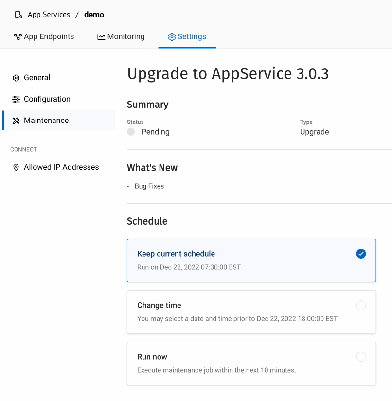

Upgrading App Services
Scheduling for Capella App Services
The underlying framework used by App Services will require periodic upgrading as new versions are rolled out. These upgrades can be scheduled on a per-App Service basis to ensure that they occur at the time best suited to maintain high availability for your services. You can also log incidents and maintenance requests.
App Services Version Support
You can deploy and upgrade databases to new versions of the App Services framework as they become available.
In general, releases follow this pattern:
| Release | Introduces |
|---|---|
Major |
Major new features and functionality. |
Minor |
Some new features or improvements. |
Patch |
Essential fixes and improvements. |
The App Service framework versions offered in Capella are supported until they reach the end of maintenance. This support typically aligns with the full maintenance lifespan of the major or minor version provided by Couchbase. (See App Service Version Maintenance Support.)
To provide secure and reliable service, the version of the App Service framework deployed will be the latest available patch version. You can expect to be upgraded to the latest patch version shortly after it becomes available on Capella.
When maintenance or an upgrade is scheduled, you can choose to upgrade your App Service framework at any time before the scheduled date. When the scheduled time is reached, the framework is upgraded automatically. The notice that Capella aims to provide varies depending on the nature of the upgrade. See App Service Upgrade Timeframes.
App Services Version Maintenance Support
Couchbase versions, release dates, and end of maintenance on Capella is as follows:
| Version | Release Date | End of Hosted Maintenance |
|---|---|---|
App Services 3.0.x |
June 2022 |
TBA. No sooner than Oct 2023 |
App Services Upgrade Timeframes
Within our best practice, we typically provide the notice period described below for the upgrade or maintenance types shown in the following table:
| Upgrade or Maintenance Type | Description | Notice Period |
|---|---|---|
Critical Upgrade |
An upgrade done in response to an urgent bug, vulnerability, or other issue impacting database health or performance. |
None. |
Routine Maintenance or App Services Framework Patch |
A new App Services patch version or routine image upgrades. |
3 weeks. |
App Services Framework Minor Release |
A new App Services minor version release. |
From launch on Capella to end of support on Capella. |
App Services Framework Major Release |
A new App Services major release version. |
From launch on Capella to end of support on Capella. |
| A shorter than best practice period might apply depending on particular circumstances. |
Maintenance Jobs
Maintenance job statuses are pending, running, and completed.
All upgrades and maintenance patches have a target start time. Capella aims to start the maintenance of your App Services at this time. However, maintenance jobs are sometimes delayed when the App Services cannot be upgraded. For example, when an underlying database is reconfiguring.
For each individual maintenance job, you can:
-
View its type, status, and scheduled time to upgrade.
-
Review its overview and what’s new.
-
Reschedule it to upgrade at a different time.
-
Create a support ticket.
When a maintenance job is scheduled, email notifications are sent to:
-
Organization Owners where one or more clusters in their organization is scheduled for maintenance.
-
Project Owners and Project managers where at least one cluster on a project they have access to is scheduled for maintenance.
You can reschedule the target start time for an individual maintenance job or choose to run the maintenance job immediately. However, maintenance jobs cannot be deferred indefinitely because each maintenance job has a latest possible upgrade date.
When a maintenance job runs, the App Service is moved to a pending state.
Maintenance redeployments are not time-bound, and the time taken varies depending on the size of framework upgrade.
Accessing the App Services Maintenance Schedule
-
From the project page, select the App Services tab.
-
Select the App Service you wish to schedule.
-
Click through to access the App Service maintenance screen:
Setting the Day and Time for Future Maintenance Updates
You can specify a preferred day of week and time to carry out future maintenance.
Press Edit Time to set the preferred day and time for future maintenance updates.
From here, you can adjust the day of week and the time of day that you wish future upgrades to occur.
Reschedule a Maintenance Job
You can reschedule any of the jobs in the list that is Pending.
-
Select a job from the
Maintenance Jobslist. -
This will display a dialog for editing the maintenance schedule for the selected job.
Figure 3. Edit the Maintenance Schedule for Selected Job -
You have a number of choices for altering the schedule for the selected job:
Keep Current Schedule The existing schedule remains unchanged.
Change time Selecting this option will display a dialog box allowing you to change the date and time of the update.
Run Now The job will run within the next ten minutes:
If another job is in progress, then the selected job will be queued to run at a later time.
Creating Support Tickets
You can create a support ticket for any of the service upgrades; typically,
you’d want to do this for an upgrade that failed.
Support tickets are created from the upgrade’s maintenance screen (see Figure 2).
From here, click the Create Support Ticket button.
Fill in as much detail as possible as to the nature of the problem,
including the name of the project the service is attached to, and the database the service is using.
If you have any information held in files (service logs, example),
then drop them into the Choose a File box for uploading.
When the ticket is filled in, then press the Create Support Ticket button.
Accessing App Services Maintenance Activity Logs
Log entries for App Services maintenance are listed in the database activity logs for the database running your App Services.
Select the database running your App Service and navigate to the Activity Log page:
You can select a log entry to see more details, and raise a support ticket if required.
To learn more about activity logs, see Activity Logs